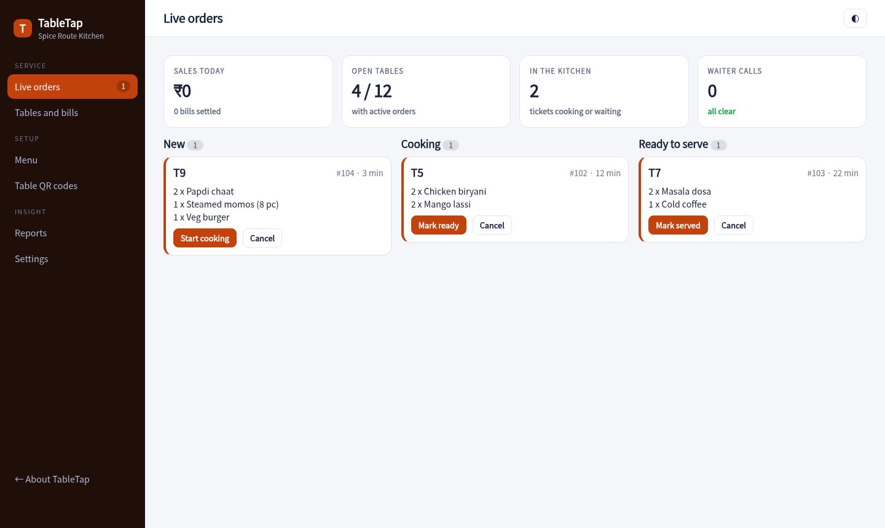
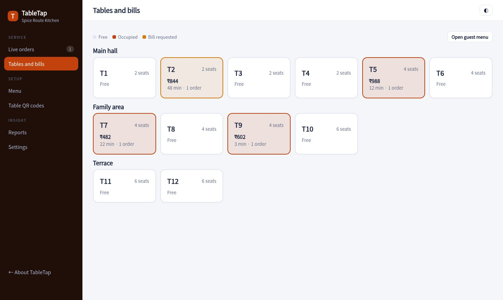
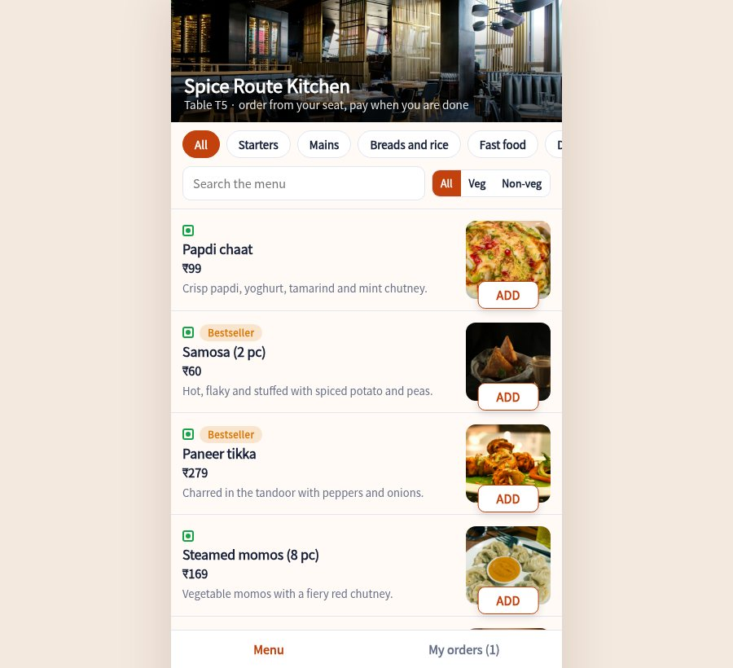

A QR code on each table opens your menu with photos. Orders go straight to a kitchen screen, waiters get the calls, and the bill is ready with GST when the guest asks.

Guests browse by category, filter vegetarian or non-vegetarian, pick spice level and extras, and add a note for the kitchen.
Tickets arrive in New, Cooking and Ready columns with a timer. A chime sounds for each new order and slow tickets turn red.
See which tables are free, eating or waiting for the bill. Tap a table for its orders, add items or settle the bill.
Guests tap Call waiter or Ask for the bill. The call shows on the live board until someone clears it.
Subtotal, discount, optional service charge and GST are worked out for you. Print a proforma bill or a tax invoice.
Mark a dish sold out the moment the kitchen runs short. It disappears from every guest phone straight away.
New, cooking and ready orders side by side, with table calls on top and today's sales in view.
Free, occupied and bill-requested tables across the main hall, family area and terrace. Settle by UPI, cash or card.

Guests scan the QR on their table, order in a few taps and watch the status move from sent to cooking to ready.

Upload dishes with photos, prices, prep times and veg or non-veg tags.
Print a QR for each table. Guests scan it and the order is tagged to the table.
The kitchen display shows tickets. Waiters serve, then settle the bill from the console.
Sample pricing for this concept build.
No. They scan the QR code and the menu opens in their phone browser.
Yes. The kitchen display runs in any browser and plays a chime when a new order arrives.
Yes. You can switch the service charge on or off and set the percentage. GST is calculated on the total after discount.
No. It is a sample menu for a made-up restaurant. Photographs are from Unsplash.
Open the guest menu in one tab and the console in another. They stay in sync.
Open the console